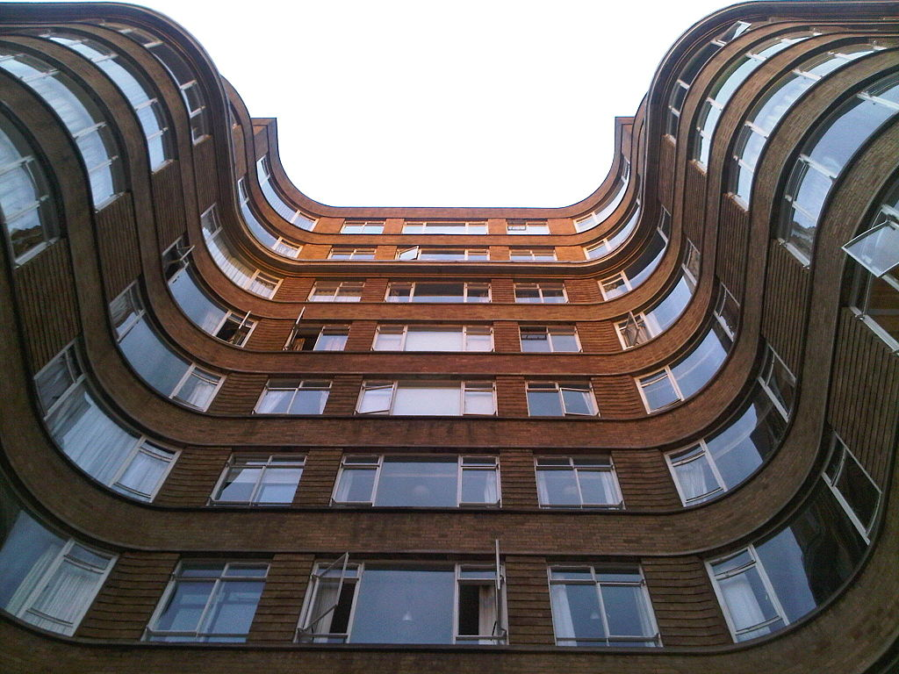

Florin Court once again stood in as Whitehaven Mansions. There is a great crane shot that follows the building from the window of Mrs.Grant's flat in 36B through Patricia's flat in 46B to Poirot's in 56B. The flats as seen in the episode are however constructed sets.